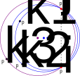

Analyze spatial aspects of data¶
The sdt.spatial module provides methods for analyzing spatial
aspects of single molecule data:
Check whether features have near neighbors using the
has_near_neighbor()functionIn tracking data, interpolate features that have been missed by the localization algorithm with help of
interpolate_coords()Calculate the area and center of mass of a polygon using
polygon_area()andpolygon_center()Find the smallest enclosing circle of a set of points via
smallest_enclosing_circle().
Examples
To find out whether single molecule features have other features nearby,
use the has_near_neighbor() function:
>>> loc = pandas.DataFrame([[10, 10], [10, 11], [20, 20]], columns=["x", "y"])
>>> loc
x y
0 10 10
1 10 11
2 20 20
>>> has_near_neighbor(loc, r=2.)
>>> loc
x y has_neighbor
0 10 10 1
1 10 11 1
2 20 20 0
Missing localizations in single molecule tracking data can be interpolated
by interpolate_coords():
>>> trc = pandas.DataFrame([[10, 10, 0, 0], [10, 10, 2, 0]],
... columns=["x", "y", "frame", "particle"])
>>> trc
x y frame particle
0 10 10 0 0
1 10 10 2 0
>>> trc_i = interpolate_coords(trc)
>>> trc_i
x y frame particle interp
0 10 10 0 0 0
1 10 10 1 0 1
2 10 10 2 0 0
polygon_area() can be used to calculate the area of a polygon:
>>> vertices = [[0, 0], [10, 0], [10, 10], [0, 10]]
>>> polygon_area(vertices)
100.0
Programming reference¶
- sdt.spatial.has_near_neighbor(data, r, columns={})[source]¶
Check whether localized features have near neighbors
Given a
pandas.DataFramedata with localization data, each data point is checked whether other points (in the same frame) are closer than r.The results will be written in a “has_neighbor” column of the data DataFrame.
- Parameters:
data (pandas.DataFrame) – Localization data. The “has_neighbor” column will be appended/overwritten with the results.
r (float) – Maximum distance for data points to be considered near neighbors.
columns (dict, optional) – Override default column names as defined in
config.columns. Relevant names are coords and time. This means, if your DataFrame has coordinate columns “x” and “z” and the time column “alt_frame”, setcolumns={"coords": ["x", "z"], "time": "alt_frame"}.
- sdt.spatial.interpolate_coords(tracks, columns={})[source]¶
Interpolate coordinates for missing localizations
For each particle in tracks, interpolate coordinates for frames where no localization was detected.
- Parameters:
tracks (pandas.DataFrame) – Tracking data
columns (dict, optional) – Override default column names as defined in
config.columns. Relevant names are coords, time, and particle. This means, if your DataFrame has coordinate columns “x” and “z” and the time column “alt_frame”, setcolumns={"coords": ["x", "z"], "time": "alt_frame"}.
- Returns:
Tracking data with missing frames interpolated. An “interp” column is added. If False, the localization was detected previously. If True, it was added via interpolation by this method.
- Return type:
pandas.DataFrame
- sdt.spatial.polygon_area(vertices)[source]¶
Calculate the (signed) area of a simple polygon
The polygon may not self-intersect.
This is based on JavaScript code from http://www.mathopenref.com/coordpolygonarea2.html.
function polygonArea(X, Y, numPoints) { area = 0; // Accumulates area in the loop j = numPoints - 1; // The last vertex is the 'previous' one to the // first for (i=0; i<numPoints; i++) { area = area + (X[j]+X[i]) * (Y[j]-Y[i]); j = i; // j is previous vertex to i } return area/2; }
For triangles, a faster, specialized code path based on the cross product is used.
- Parameters:
vertices (Sequence[Sequence[float]]) – Coordinates of the poligon vertices.
- Returns:
Signed area of the polygon. Area is > 0 if vertices are given
counterclockwise.
- Return type:
float
- sdt.spatial.polygon_center(vertices, area=None)[source]¶
Compute center of mass of a polygon
according to the formula
\[ \begin{align}\begin{aligned}C_\mathrm{x} = \frac{1}{6A} \sum_{i=0}^{n-1} (x_{i} + x_{i+1}) (x_{i}y_{i+1} - x_{i+1}y_{i})\\C_\mathrm{y} = \frac{1}{6A} \sum_{i=0}^{n-1} (y_{i} + y_{i+1}) (x_{i}y_{i+1} - x_{i+1}y_{i})\end{aligned}\end{align} \]where \(A\) is the signed polygon area as computed by
polygon_area(). Note that the formula is valid for a closed polygon. This function also works for open polygons.- Parameters:
vertices (Sequence[Sequence[float]]) – Sequence of \((x, y)\) coordinate pairs.
area (Optional[float]) – If already computed, pass area of the polygon for efficiency
- Return type:
Coordinates of the center of mass
- sdt.spatial.smallest_enclosing_circle(coords, shuffle=True)[source]¶
Find the smallest circle enclosing a set of points
- Parameters:
coords (Sequence[Sequence[float]]) – 2D coordinates of points
shuffle (Union[bool, RandomState]) – If True, shuffle coordinate list before calculating circle. If a RandomState instance is passed, use it for shuffling. Note that coordinates should be in a random order for performance reasons.
- Return type:
Center coordinates and radius
Note
If you want to calculate the smallest enclosing circle in a numba.jit-ed function, have a look at
smallest_enclosing_circle_impl().
Smallest enclosing circle algorithm¶
The smallest enclosing circle \(C_n\) for points \(p_1, p_2, …, p_n\) in randomized order is found iteratively. Let’s assume that \(C_{i-1}\) has already been found. If \(p_i\) lies within \(C_{i-1}\), then \(C_i = C_{i-1}\). Else, \(C_i\) needs to be the smallest enclosing circle for \(p_1, p_2, …, p_i\); \(p_i\) has to lie on the circle.
This new problem is again solved iteratively. Assume \(C'_{j-1}\) is the smallest enclosing circle for \(p_1, p_2, …, p_{j-1}\), \(j < i\) with \(p_i\) on the circle. Then \(C'_j = C'_{j-1}\) if \(p_j\) lies within \(C'_{j-1}\). Else the smallest enclosing circle for \(p_1, p_2, …, p_j\) with \(p_j\) and \(p_i\) on the circle needs to be found.
If all \(p_1, p_2, …, p_j\) lie within the circle whose diameter is the line \(l\) connecting \(p_j\) and \(p_i\), this circle is \(C'_j\). Otherwise, two possible candidates for \(C'_j\) are given by those circles through \(p_k\) on either side of the line \(l\) such that the circle centers are farthest away from \(l\). Of those two, the circle with the smaller radius is chosen.
{kind=link}
Source: Project Nayuki, in particular this presentation.